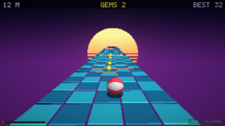

JumPHP
Retro 2D games written in PHP, running in your browser (PHP compiled to WebAssembly).
Source: github.com/davidnurdin/jumPhp · Make your own game: tutorial (tutoriel en français)
BREAKOUT Break the wall of bricks with a bouncing ball: 3 lives, a new wall every level.Left / Right (or A / D): move the paddle. Space: launch the ball. Escape / P: pause. HELLO THREADS A fractal computed by a pool of PHP threads (TrueAsync), while the main loop keeps drawing.Space: next spot. M: threads / main thread. Escape: pause. HELLO WEBGL 3D cubes and post-processing shaders (CRT, wave, 4 colours) from PHP, with WebGL in the browser.Arrows / pad sticks: turn, zoom (LT / RT). Space / A: next shader. Escape / Start: pause.
JUMPBALL PHP A 3D runner in PHP + WebGL: the ball rolls faster and faster, steer and jump over the holes.Arrows / A D / stick: steer. Space / Up / A: jump (hold to jump again). Escape / Start: pause. PONG The classic, in PHP: against the computer, two players on one keyboard, or online.Player 1: W / S. Player 2: Up / Down. Escape: pause.